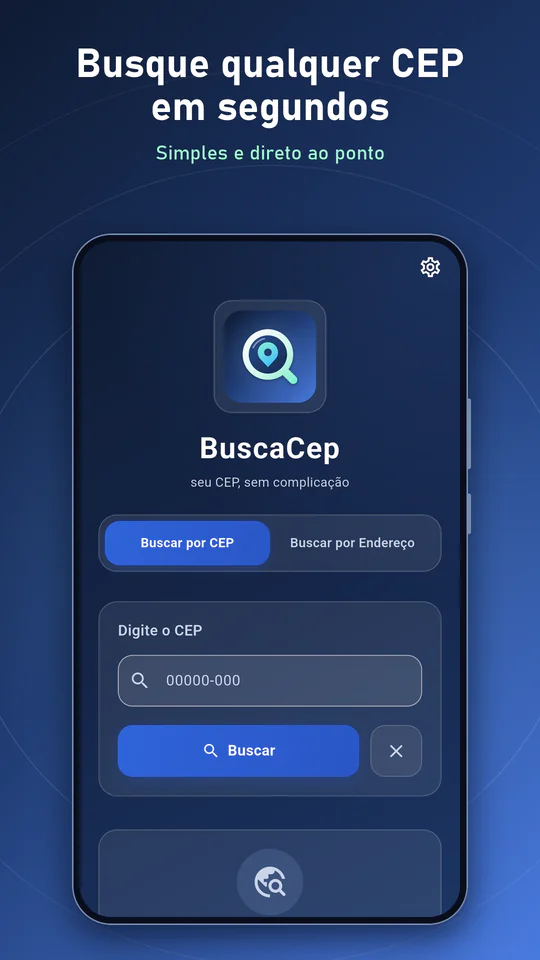
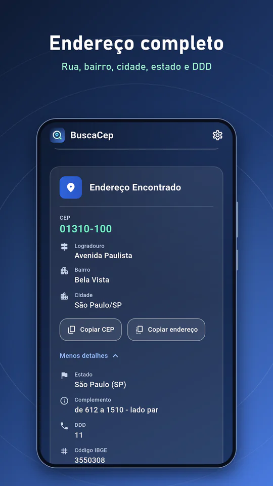
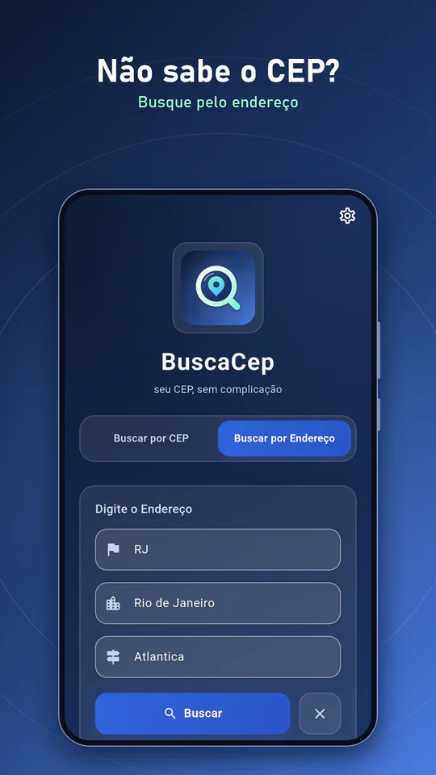
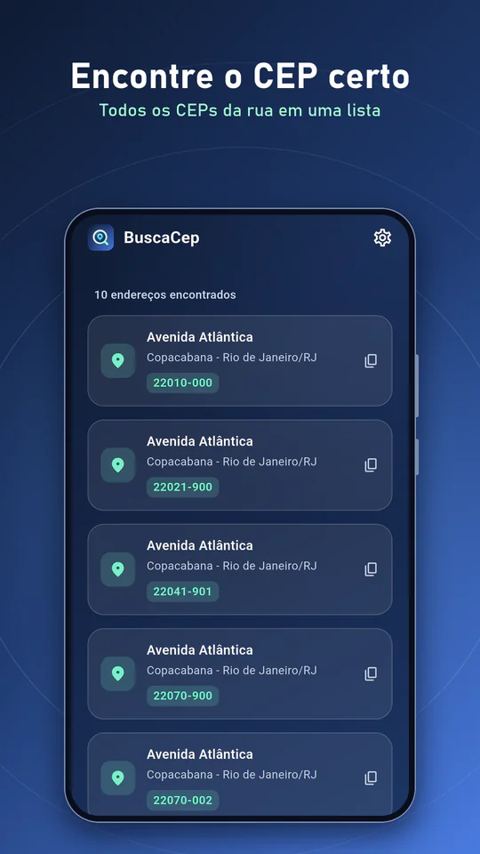
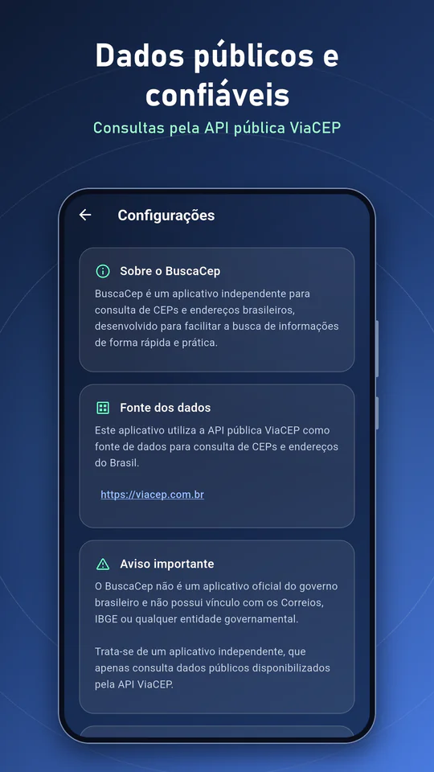
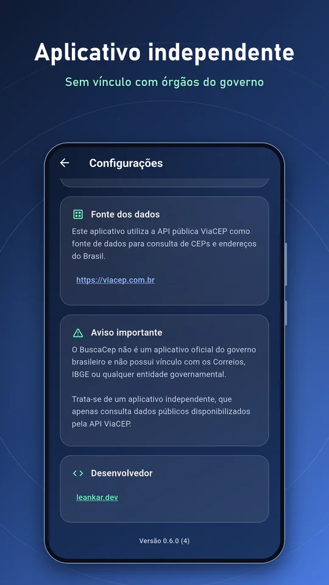

Por que usar
-
CEP em segundos
Ao completar os 8 dígitos a busca é feita sozinha e o endereço já aparece formatado.
-
Não sabe o CEP? Busque
Pesquise por UF, cidade e logradouro e veja todos os CEPs da rua em uma lista.
-
Copie com um toque
Copie o CEP ou o endereço completo e consulte bairro, cidade, estado, DDD e código IBGE.
Telas do app






Veja em ação
Funcionalidades
- Busca de CEP por código numérico direto
- Busca por endereço: UF + cidade + logradouro
- Busca automática ao completar os 8 dígitos, com máscara 00000-000
- Retorna logradouro, bairro, cidade, estado, DDD, complemento e código IBGE (nos detalhes expansíveis)
- Tratamento de erros: CEP inválido, timeout e sem conexão
- Copie o CEP ou o endereço completo com um toque
- Integração com a API pública ViaCEP
- Desenvolvido com Riverpod + Dio (HTTP)
- Interface escura e limpa, sem anúncios, sem coleta de dados
Sobre o aplicativo
O BuscaCep_las surgiu de uma necessidade concreta: durante compras online, preencher formulários de endereço com CEPs que não estão de cabeça é uma fricção pequena, mas irritante. O app resolve isso com uma interface direta — campo de entrada, botão de busca, resultado com clareza.
A integração usa a API ViaCEP, serviço público mantido pela comunidade de desenvolvedores brasileiros, que cobre todos os CEPs do Brasil com dados atualizados. As requisições são feitas com Dio, com configuração de timeout para evitar telas travadas em conexões lentas.
A busca por endereço é especialmente útil quando se conhece a rua mas não o CEP: basta informar o estado (UF), a cidade e o logradouro para receber uma lista com os CEPs correspondentes. Ideal para validar endereços de clientes ou localizar CEPs de bairros específicos.
O gerenciamento de estado é feito com Riverpod: cada consulta gera um estado reativo (carregando, sucesso, erro) que a UI consome diretamente, sem boilerplate. Isso mantém a interface responsiva e o código organizado conforme a complexidade cresce.
O app não armazena nenhum histórico de consultas, não pede permissões além do acesso à internet e não exibe nenhum tipo de anúncio. Gratuito sem asterisco.
O BuscaCep_las é um aplicativo independente: não é oficial do governo brasileiro e não tem vínculo com os Correios, o IBGE ou qualquer entidade governamental. Ele apenas consulta dados públicos disponibilizados pela API ViaCEP.
Requisitos e compatibilidade
- Plataforma
- Android
- Android mínimo
- Android 7.0 ou superior
- Idiomas
- Português (Brasil)
- Preço
- Gratuito, sem compras dentro do app
- Anúncios
- Sem anúncios
- Conexão
- Requer internet (consulta à API pública ViaCEP)
- Permissões
- Somente acesso à internet
- Política de privacidade
- Ver política do app
Perguntas frequentes
-
O app usa a API pública ViaCEP (viacep.com.br), um serviço gratuito e amplamente utilizado no Brasil que cobre todos os CEPs do território nacional com dados atualizados. A requisição é feita diretamente do app para a API sem nenhum intermediário.
-
Não, é necessária conexão com a internet para consultar os CEPs, pois os dados vêm da API ViaCEP em tempo real. O app detecta a ausência de conexão e exibe uma mensagem de erro adequada sem travar a interface.
-
Não, o BuscaCep_las é especializado nos CEPs brasileiros. A API ViaCEP cobre apenas o Brasil. Para outros países seria necessário integrar APIs diferentes, o que não está nos planos atuais do app.
-
Sim, 100% gratuito e sem anúncios. Não há compras dentro do app, não há limitação de consultas e não há nenhuma funcionalidade bloqueada. O app não monetiza o usuário de nenhuma forma.
-
Na aba de busca por endereço, informe o estado (UF de 2 letras, ex: SP), a cidade e o logradouro (nome da rua, avenida etc.). O app consulta a ViaCEP e retorna uma lista com todos os CEPs que correspondem ao endereço informado.
-
Não. O app não armazena histórico de consultas, não coleta dados pessoais e não pede nenhuma permissão do Android além do acesso à internet. Cada consulta é independente e descartada após exibir o resultado.
-
Não. O BuscaCep é um aplicativo independente, sem vínculo com os Correios, o IBGE ou qualquer entidade governamental. Ele apenas consulta os dados públicos da API ViaCEP. O mesmo aviso aparece na tela de Configurações do app.
Consulte qualquer CEP do Brasil. Gratuito, rápido e sem anúncios.
Baixar no Google Play